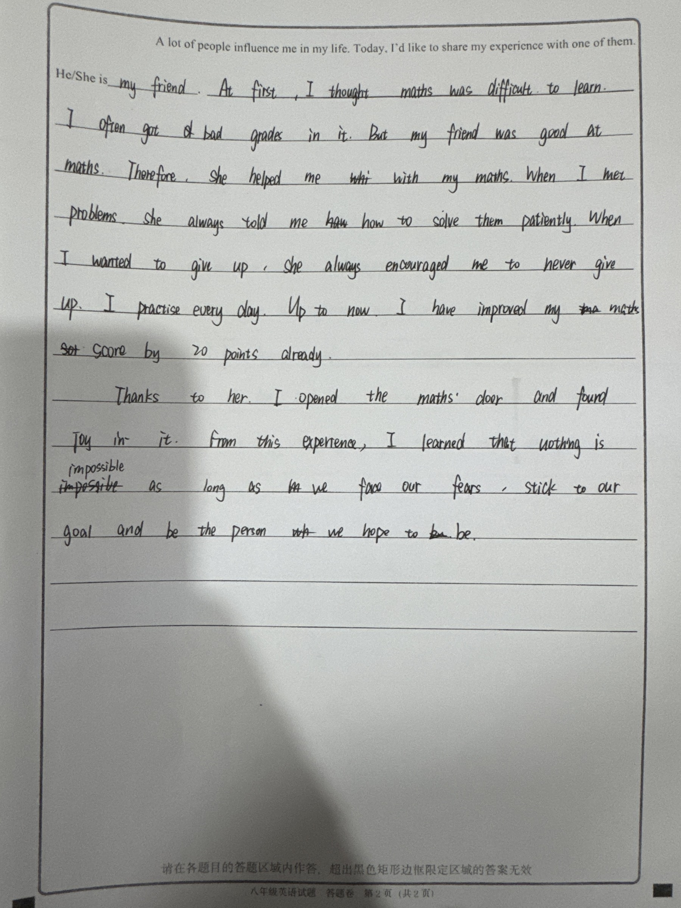

先解决学生收到评语后的一个困难
“内容再具体些。”该补哪一处？怎样补？
为此，把原稿、评语和二稿接起来。
现场实操 · 完整流程 · 3分钟
教师 → 评阅学生 → 原作者 → 教师
沿用 NewsunLee 账户贯通的真实业务工作台11个步骤、角色视角与真实进度均保留。
题目标准 → 核对原稿 → 批改复核 → 发布反馈
分配任务 → 引用原文 → 说明判断 → 提交评阅
查看核对线索 → 回到原稿 → 审核并发布
回应与计划 → 二稿上传 → 核对收取 → 继续批阅
主线使用已有真实二稿的B案例“朋友帮助学习数学”；A、C案例保留。另留10秒返回讲解。
按语篇目的选择内容、结构和语言。
筛选主要内容和支撑细节。
通过自评、互评完善结构、内容和语言。
为此，设计习作互评项目
标准可见判断有据修改留痕
先明确题目、读者与写作目的，把评价要求交给学生。
主要内容回应写作目的吗？
具体内容支撑主要意思吗？
内容顺序、句段关系清楚吗？
语言清楚、准确、适合读者吗？
新任务按四维判断；历史案例保留当时的五问记录。形成性档位不折算作文分数。
方向已经找到了，再看建议能否回到原稿。
同伴建议、AI反馈为真实记录；教师追问为教学示范，作者依据真实经历修改。
To Be a Better Me · 匿名真实材料

已能核对一条建议的实际落实；整篇质量、独立完成与跨任务效果，继续观察。
同伴指向“鼓励”的原句，建议写出具体话语。
作者选择采纳，说明希望让内容更加完整。
照片中新增鼓励话语，为朋友的支持提供细节。
用短片段校准，练“引用—解释—建议”。
回到原稿核对识别与判断，再由教师把关。
把作者回应、二稿对照接入后续教学。
每次练好一条有依据的重点建议。
核查改了哪里，是否回应写作目的。
从经历到建议、说明，减少提示，观察独立完成。
从“哪里不好”走向“依据是什么”。
日常教学观察，用于说明设计起点；不是本次任务的统计结果。
英语习作互评 · 以评促改
让一条有依据的建议，走到学生自己的下一稿。